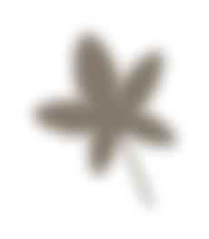

We have all had the experience, on a visit to one of the great temples of Kyoto or Nara, of being shown a scroll, one of the temple's treasures, hanging in a large, deeply recessed alcove. So dark are these alcoves, even in bright daylight, that we can hardly discern the outlines of the work; all we can do is listen to the explanation of the guide, follow as best we can the all-but invisible brush strokes, and tell ourselves how magnificent a painting it must be. Yet the combination of that blurred old painting and the dark alcove is one of absolute harmony. The lack of clarity, far from disturbing us, seems rather to suit the painting perfectly.
私たちは皆、京都や奈良の大寺院を訪れた際、深く奥まった大きな床の間に掛けられた寺院の宝物の一つである巻物を見せられた経験があるでしょう。 これらの床の間は明るい日中でも非常に暗いため、作品の輪郭はほとんど識別できません。 私たちにできることは、ガイドの説明を聞き、目に見えない筆運びをできる限り追い、これがどれほど素晴らしい絵であるかを自分に言い聞かせることだけです。 しかし、そのぼやけた古い絵画と暗い床の間の組み合わせは、絶対的な調和の一つです。 鮮明さの欠如は、私たちを邪魔するどころか、むしろこの絵にぴったりと合っているように思えます。
For the painting here is nothing more than another delicate surface upon which the faint, frail light can play; it performs precisely the same function as the sand-textured wall. This is why we attach such importance to age and patina. A new painting, even one done in ink monochrome or subtle pastels, can quite destroy the shadows of an alcove, unless it is selected with the greatest care.
なぜなら、ここの絵画は、かすかな、もろい光が戯れる、もう一つの繊細な表面にすぎないからです。 砂の質感のある壁とまったく同じ機能を果たします。 これが、私たちが年齢と緑青を非常に重要視する理由です。 新しい絵画は、たとえそれがモノクロや微妙なパステルインクで描かれたものであっても、細心の注意を払って選択しない限り、床の間の影を完全に破壊する可能性があります。